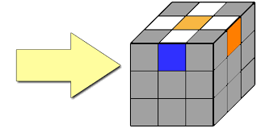

Собрать Кубик рубика может только я каждый!Сборка состоит из нескольких этапов:
Это первый этап. Для начала собираем ромашку. Нужно найти желтый центр.Вокруг него нужно разместить рёбра белого цвета как на фото ниже
Дальше размещаем второй цвет ребра к такому же цвету, но на центре. Когда мы это сделали со всеми цветами, то опускаем их вниз, получиться крест
Крест собран! Пособирайте его без подсказок, а после переходите к следующему этапу
Для начала нужно вызвать шамана и он соберёт научиться делать не очень сложную комбинацию "Пиф-паф". Есть правый и левый Пиф-паф. В видео ниже показано как его делать
Также само, но с левой рукой и гранью. Левая вверх, верхняя вправо, левая вниз, верхняя влево
Когда вы знаете Пиф-паф, то можно ставить углы в нужное место, как на видео ниже
В этом видео вы узнали как собрать первые 2 слоя
В этом этапе мы собираем полностью крест и ставим на нужные места углы на стороне где ранее собирали ромашку. Больше информации на этом видео
Ну что же наступил последний этап сборки кубика рубика! На этом видео всё подробно расказано, а вам остается только запомнить и собрать этот ненужный кубик рубика
Если не получается собрать кубик рубика лучше посмотрите это видео
Огромная благодарность создателям программы Visual studio code, а также ютуб каналам: Євгеній Бондаренко, Максим Чечнев за видео на этом сайте (В Visual studio code я написал этот сайт)